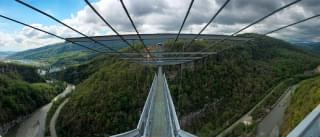

Загрузить фотографию
Затмите их всех!
Выкладывайте все, что накопилось в телефоне!
Взгляните на фотографии, которые выкладывают пользователи! Видите, как не хватает ваших?
 Прыгать или нет? Напишите в
комментарии свой совет и
смотрите прямую трансляцию в
перископе, задавайте свои вопросы!Нравится:
Затмите их всех!
Выкладывайте все, что накопилось в телефоне!